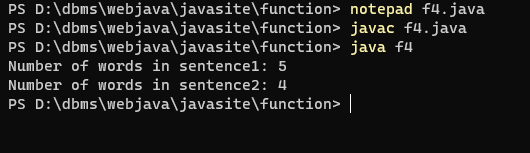

prog 1. Write a Java method to find the smallest number among three numbers.
output
prog 2. Write a Java method to compute the average of three numbers.
output
prog 3. Write a Java method to display the middle character of a string. Note: a
If the length of the string is odd there will be two middle characters.
b If the length of the string is even there will be one middle character.
output
prog 4. Write a Java method to count all the words in a string.
output

prog 5. Write a Java method to compute the future investment value at a given interest rate for a specified number of years.
output
prog 6.Write a Java method to print characters between two characters (i.e. A to P)
output
prog 7. Write a Java method to check whether a string is a valid password.
output
prog 8. Write a Java method to find all twin prime numbers less than 100..
output
prog 9. Write a Java method to count the number of digits in an integer with the value 2. The integer may be assumed to be non-negative.
output
prog 10. Write a Java method that accepts three integers and checks whether they are consecutive or not. Returns true or false.
output
prog 11. Write a Java method that accepts three integers and returns true if one is the middle point between the other two integers, otherwise false
output
prog 12. Write a Java method that checks whether all the characters in a given string are vowels (a, e,i,o,u) or not. Return true if each character in the string is a vowel, otherwise return false.